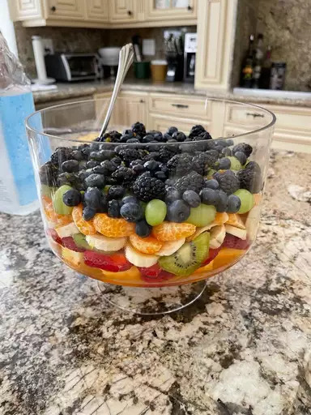

Summer Fruit Salad

Description
This fruit salad is perfect for a backyard bbq or any occasion.
There are never leftovers! This is one of my favorite fruit salad recipes,
as I think the citrusy sauce really makes it.
This salad is tastier the longer you can let it soak in its juices.
I prefer 3 to 4 hours in the refrigerator before I serve it.
Ingredients
- 1 cup fresh orange juice
- 1 teaspoon vanilla extract
- 1 teaspoon grated lemon zest
- 1 cup fresh lemon juice
- 2 cups cubed fresh pineapple
- 2 cups strawberries, hulled and sliced
- 3 kiwi fruit, peeled and sliced
Steps
- Make the sauce on the stove and let it cool.
- Arrange the fruits in a container, then pour the sauce over them.
- Cover and refrigerate to allow the flavors to meld.